Sistemas Operativos 750001C | Universidad del Valle
Este sitio web constituye la documentación técnica formal desarrollada por nosotros como el Grupo 5 para la entrega final de la asignatura. Nuestro objetivo principal es presentar la consolidación, diseño y validación de una infraestructura Cloud local estructurada.
En este espacio documentamos el proceso de despliegue paso a paso: desde el aprovisionamiento de máquinas virtuales con esquemas de red interconectados, pasando por la contenerización y aislamiento de microservicios usando Docker Compose, hasta la posterior orquestación y escalabilidad elástica local controlada mediante un clúster de Kubernetes y su respectivo entorno de documentación web automatizado.
A través de las diferentes secciones del menú superior, exponemos de manera rigurosa nuestras evidencias analíticas, configuraciones, diagramas topológicos de bloques y los resultados de ingeniería obtenidos en las fases de desarrollo.
Recurso audiovisual obligatorio que valida el correcto funcionamiento de los entornos y servicios integrados:
Distribución de roles y componentes asignados para el desarrollo del proyecto:
| Nombre Completo | Código Estudiante | Rol / Componente Asignado |
|---|---|---|
| Valeria Rodriguez Loiza | 202560843 | Componente 4 Sitio Web + Gestión DevOps Git |
| Santiago Gil Guzman | 202560861 | Componente 1 Virtualización con Linux |
| Daniela Paz | 201969075 | Componente 1 Virtualización con Linux |
| Kenneth Gonzalez | 202560854 | Componente 2 Contenedores Docker |
| Johan Erazo | 202560853 | Componente 3 Kubernetes Clúster |
Aprovisionamiento de dos entornos virtuales controlados a través de hipervisor con esquemas de particionamiento manual independiente (mínimo /, swap y /home):
Comandos ejecutados en consola para la verificación de interfaces de red y túnel SSH seguro hacia la máquina servidor:
1. Interfaz GParted en Pop!_OS: Verificación visual de las particiones extendidas y lógicas.
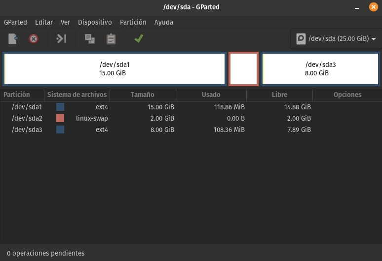
2. Comando lsblk en Pop!_OS: Mapeo estructurado de puntos de montaje del sistema de archivos gráfico.
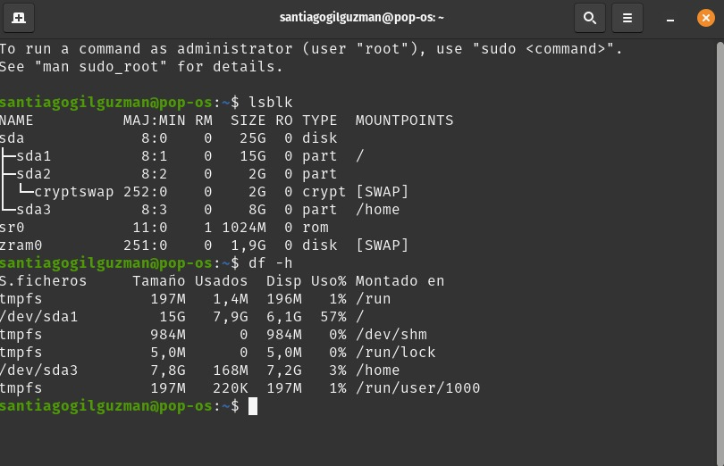
3. Comando lsblk en Rocky Linux: Estructura interna LVM y particiones root, home y swap en la consola.
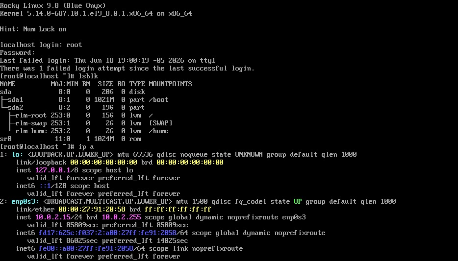
4. Versión del Sistema (os-release): Confirmación exacta de la versión corporativa Rocky Linux 9.8 (Blue Onyx).
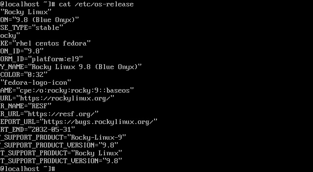
5. Estado de Servicios Remotos: Demostración de los demonios sshd y firewalld activos de manera simultánea.
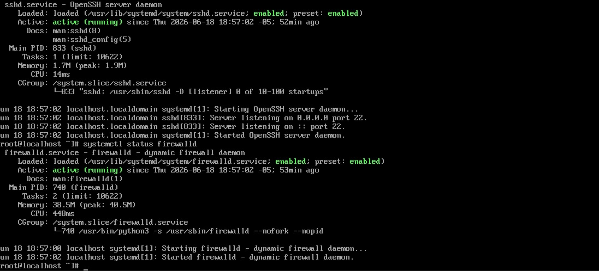
6. Prueba de Conectividad de Red (Ping): Envío exitoso de paquetes de datos con 0% de pérdida entre entornos lógicos.
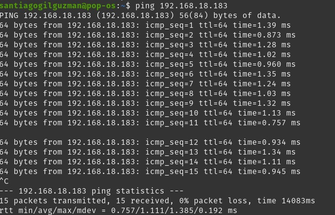
7. Acceso Seguro por SSH Exitoso: Conexión remota establecida desde la terminal externa a la cuenta del servidor.
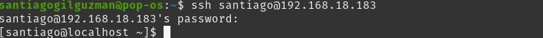
Empaquetamiento y despliegue de microservicios web desacoplados utilizando como base la distribución corporativa asignada:
Imagen Base Asignada: rockylinux:9
Comandos empleados para la construcción y el levantamiento en segundo plano de la pila de servicios:
1. Versión de Entornos: Verificación de versiones estables de Docker Engine y Docker Compose CLI.
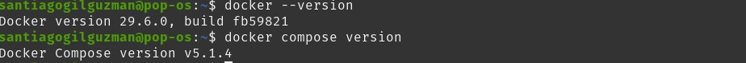
2. Listado de Imágenes Locales: Imágenes empaquetadas listas para el aprovisionamiento de microservicios.
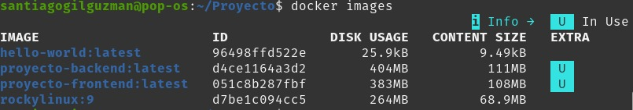
3. Levantamiento Exitoso de Servicios: Creación y ejecución de contenedores aislados mediante Docker Compose.
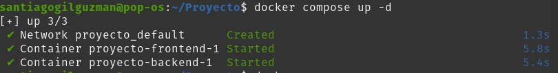
4. Estado de los Contenedores: Monitoreo de salud (`docker ps`) mostrando mapeo de puertos y estados funcionales.
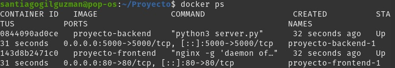
5. Acceso Web al Frontend: El navegador web procesando el sitio del Grupo 5 servido nativamente por Nginx.
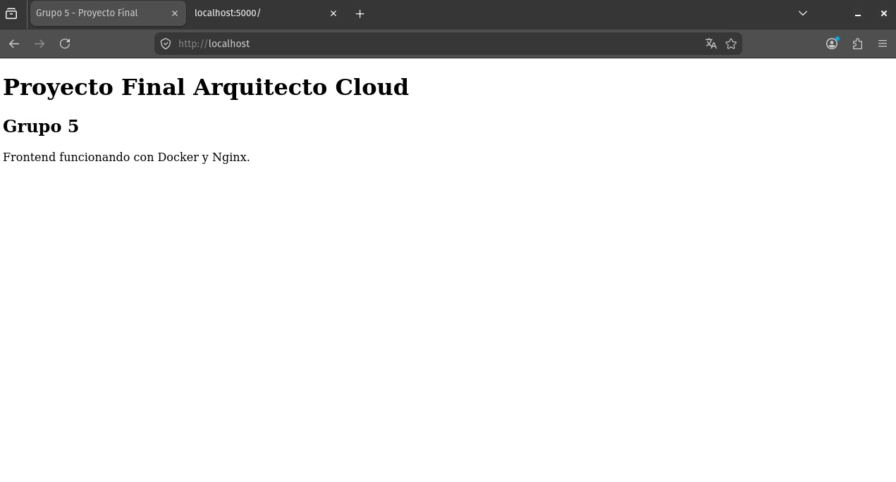
6. Respuesta Exitosa del Backend: Verificación de API independiente en el puerto 5000 entregando estatus funcional.
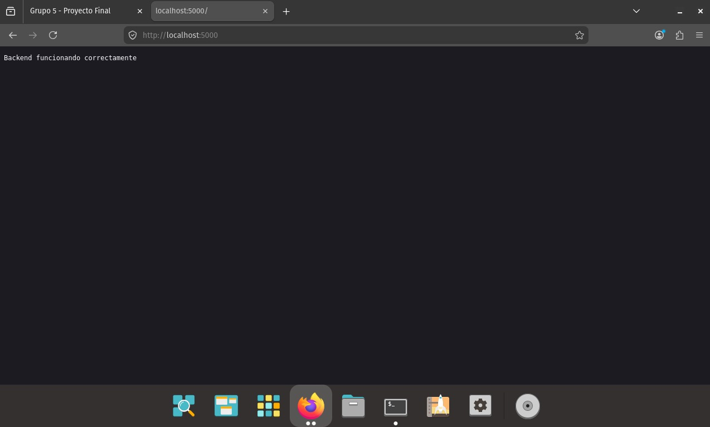
Estructuración de alta disponibilidad local por medio de manifiestos declarativos YAML gestionados en Minikube:
Monitoreo y manipulación de réplicas concurrentes del servidor web:
Despliegue continuo de la documentación técnica y bitácora del proyecto mediante el uso del servicio GitHub Pages y control de versiones distribuido.
Este componente integra el control de accesos de colaboradores, el aseguramiento del flujo de trabajo en la rama principal y la actualización automatizada del sitio de cara al cliente o equipo evaluador.
Flujo de comandos esenciales ejecutados en la consola local para actualizar el repositorio y asegurar la persistencia de los cambios:
1. Historial de Commits en GitHub: Registro cronológico y estructurado de las contribuciones y cambios realizados en el repositorio por los integrantes del equipo.
2. Entorno GitHub Pages Activo: Verificación del estado de despliegue exitoso (Deployment) que sirve este sitio web de manera pública y automatizada bajo protocolo HTTPS seguro.
Análisis técnico sobre la implementación de la infraestructura del proyecto: